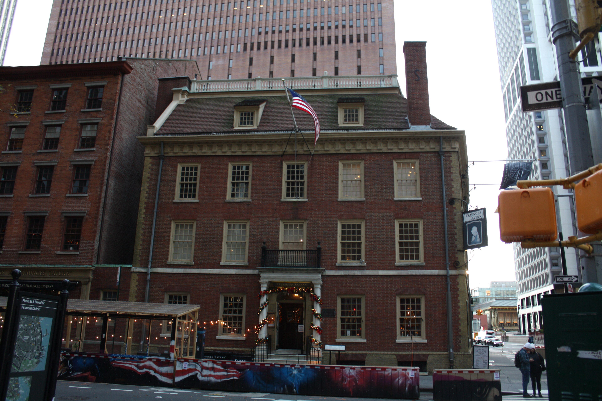

01 · Financial District
Fraunces Tavern
The building at 54 Pearl Street was constructed in 1719 as a house for the De Lancey family. Samuel Fraunces bought it in 1762 and opened the Queen’s Head Tavern. On 4 December 1783, George Washington bid farewell to his officers in the Long Room, now part of Fraunces Tavern Museum. The property has not been a tavern without interruption, and it has been heavily restored, so “oldest bar” depends on how you count continuity.
Tip: Corner of Pearl and Broad Streets. Subway: 4/5 to Bowling Green or R/W to Whitehall. Visit the museum upstairs if you want the Washington story in context.
Directions: Google Maps · Apple Maps
Photo: MainlyTwelve, CC BY-SA 4.0, via Wikimedia Commons
Sources: Fraunces Tavern Museum: history · National Park Service
See Fraunces Tavern on our Unique Pubs deck →
Find a stay near Fraunces Tavern →